إعادة بناء الحقول المغناطيسية المتجهة للبقع الشمسية بالتعلم العميق للتنبؤ بالعواصف الشمسية
الملخص
ينتج النشاط المغناطيسي الشمسي توهجات شمسية قصوى وانبعاثات كتلية إكليلية، وهي تشكل تهديدات جسيمة للبنية التحتية الإلكترونية ويمكن أن تعطل النشاط الاقتصادي تعطيلًا كبيرًا. ومن ثم فمن المهم فهم محفزات النشاط الشمسي الانفجاري وتطوير تنبؤ موثوق بالطقس الفضائي. تلتقط بيانات الحقول المغناطيسية المتجهة في الغلاف الضوئي تعقيد الحقول المغناطيسية للبقع الشمسية، ولذلك يمكنها تحسين جودة التنبؤ بالطقس الفضائي. غير أن أحدث رصدات الحقول المتجهة لا تتوافر بصورة منتظمة إلا من مرصد Solar Dynamics Observatory/Helioseismic and Magnetic Imager (SDO/HMI) منذ 2010، في حين لا تسجل معظم المهمات والمرافق الرصدية الحالية والسابقة الأخرى، مثل Global Oscillations Network Group (GONG)، إلا حقول خط البصر (LOS). هنا، وباستخدام شبكة عصبية التفافية قائمة على وحدات inception، نعيد بناء خصائص الحقول المتجهة للبقع الشمسية من HMI من مغناطوغرامات LOS الخاصة بكل من HMI وGONG بدقة عالية (ارتباط ) ومع دقة مستمرة في التنبؤ بالتوهجات. ونعيد بناء خصائص الحقول المتجهة أثناء عواصف الهالوين في 2003، التي لا تتوافر لها إلا رصدات حقل LOS، وتلتقط لولبية التيار الكهربائي المقدرة بواسطة CNN بدقة الدوران المرصود للبقعة الشمسية المرتبطة بها قبل التوهجات القصوى، مظهرة زيادة لافتة. وبذلك تمهد دراستنا الطريق لإعادة بناء بيانات الحقول المتجهة لما يعادل ثلاث دورات شمسية من قياسات LOS السابقة، وهي ذات فائدة كبيرة في تحسين نماذج التنبؤ بالطقس الفضائي واكتساب رؤى جديدة حول النشاط الشمسي.
1 المقدمة
تتولد الحقول المغناطيسية للبقع الشمسية داخل باطن الشمس، ثم تغدو طافية عبر منطقة الحمل الشمسي وتظهر في الغلاف الضوئي والإكليل على هيئة بنى واسعة النطاق من البقع الشمسية والمناطق النشطة (ARs) في صورة حلقات عملاقة (Cheung & Isobe, 2014). والحلقات الإكليلية ديناميكية، إذ يقودها ظهور الفيض المغناطيسي والتيار الكهربائي والتدفقات المضطربة. وتتحرر الطاقة المغناطيسية الحرة المخزنة في هذه الحلقات أحيانًا عبر إعادة الاتصال المغناطيسي على شكل انفجارات مثل التوهجات والانبعاثات الكتلية الإكليلية (CMEs) (Shibata & Magara, 2011; Su et al., 2013). ويمكن أن يؤدي الإشعاع والجسيمات المشحونة المنبعثة في هذه الانفجارات إلى طقس فضائي شديد، بما يعطل حياتنا على الأرض بدرجة كبيرة (Pulkkinen et al., 2005; Eastwood et al., 2017; Boteler, 2019). ففي الماضي، تسببت العاصفة الجيومغناطيسية في 1989، الناتجة عن توهج من الفئة X15 وانبعاث CME لاحق، في فصل قواطع الدارة في شبكة كهرباء Hydro-Quebec، مما أحدث انقطاعًا واسع النطاق للكهرباء في Quebec (Boteler, 2019). وأنتجت عاصفة الهالوين في 2003 توهجات قصوى تسببت في عطل محولات وانقطاعات للكهرباء في السويد، وألحقت أضرارًا بعدة أقمار اصطناعية لمهمات علمية (Pulkkinen et al., 2005). وفي مجتمع اليوم، يمكن لعاصفة شمسية كبيرة المقدار أن تؤدي، على نحو محتمل، إلى خسائر اقتصادية بقيمة تريليونات الدولارات الأمريكية، مع زمن تعاف قد يصل إلى عقد كامل (Eastwood et al., 2017). لذلك فإن تحسين فهمنا للحقول المغناطيسية في ARs مهم لتحديد محفزات هذه الانفجارات وتحقيق تنبؤ موثوق بالطقس الفضائي.
الحقول المغناطيسية الإكليلية والفوتوسفيرية في ARs غير جهدية، وتتكون من أنابيب فيض ملتوية كما تكشفه رصدات SDO عالية الدقة وعالية الوتيرة (Pesnell et al., 2012) منذ 2010. ومن المعروف أن ARs الكبيرة وديناميكياتها المعقدة، مثل الالتواء والدوران، ترتبط بالنشاط الشمسي الانفجاري (Toriumi & Wang, 2019). وتيسر رصدات SDO/HMI للحقول المغناطيسية المتجهة في الغلاف الضوئي حساب خصائص AR (Leka & Barnes, 2007)، مثل الفيض المغناطيسي الكلي غير الموقّع، وكثافة الطاقة الحرة، ولولبية التيار الكهربائي، وقوى Lorentz، التي تميز ديناميكيات الحقول المغناطيسية في AR. وهذه الخصائص متاحة للعموم بوصفها منتج بيانات HMI المعروف باسم Space-weather HMI Active Region Patches (SHARPs) (Bobra et al., 2014). وتستخدم خصائص SHARPs على نطاق واسع في الدراسات الإحصائية لتطور الحقل المغناطيسي قبل التوهج وتراكم الطاقة (Dhuri et al., 2019) ولتحسين التنبؤ بالطقس الفضائي باستخدام التعلم الآلي (ML) (Bobra & Couvidat, 2015; Bobra & Ilonidis, 2016; Chen et al., 2019). وتقتصر رصدات HMI على دورة شمسية كاملة واحدة فقط (الدورة 24)، ولذلك فإن نماذج التنبؤ الإحصائي بالطقس الفضائي القائمة على SHARPs محدودة.
ترتبط صعوبات متعددة بقياس المركبة المستعرضة للحقل المغناطيسي في الغلاف الضوئي (Stenflo, 2013)، ولذلك فإن الأجهزة الأرضية والفضائية التي ترصد الشمس منذ عقد 1970 لا تقدم إلا رصدات للمركبة الطولية، أي مركبة خط البصر (LOS). وتتوفر رصدات مستمرة لحقول LOS على كامل القرص من خلال تلسكوب Kitt Peak الأرضي التابع لوكالة NASA/National Solar Observatory (NSO) (1974 - الحاضر) (Livingston et al., 1976)، ومن خلال Michelson and Doppler Imager الفضائي (MDI,1996 - 2011) (Scherrer et al., 1995)، ومن خلال Global Oscillations Network Group الأرضية (GONG,1995-الحاضر). ومع أن قياسات حقل LOS هذه لا تكفي لتكميم تعقيد البقع الشمسية من حيث الطاقة غير الجهدية واللولبية، فقد كانت مفيدة في تقديم تقييم نوعي لمورفولوجيا AR عبر مخططات تصنيف البقع الشمسية، مثل تصنيف McIntosh (McIntosh, 1990) وتصنيف Mount Wilson، اللذين يشكلان أساس تنبؤات الطقس الفضائي التشغيلية (Crown, 2012).
إن تحسين هذه التصنيفات النوعية لـ ARs ووضع طريقة رسمية لتكميم خصائص الحقول المتجهة من حقول LOS أمر بالغ الفائدة، وذلك (i) لأنه يتيح «تحسين» مجموعات بيانات رصدات LOS السابقة وفهم كيفية تطور خصائص الحقول المتجهة عبر دورات شمسية متعددة، و(ii) لأن التقدير الموثوق لخصائص الحقول المتجهة خلال العقود القليلة الماضية يمكن استخدامه لبناء نماذج إحصائية أكثر متانة للتنبؤ بالطقس الفضائي، و(iii) لأنه في المهمات المستقبلية التي لا تكتسب إلا بيانات LOS، يمكن أن تكون خصائص الحقول المتجهة، بل حتى إنشاء الحقول المتجهة الكاملة، جزءًا من خط معالجة بيانات أرضي. وقد أثبتت طرائق ML، مثل الشبكات العصبية الالتفافية (CNN) المطورة خلال العقد الماضي، نجاحًا كبيرًا في تحديد الأنماط والارتباطات في مجموعات البيانات الكبيرة وعالية الأبعاد، ولا سيما الصور (LeCun et al., 2015; Goodfellow et al., 2016). هنا، نستكشف الاعتماديات بين مغناطوغرامات LOS والحقول المتجهة الكاملة المقابلة في ARs من خلال نموذج CNN مطور لتقدير خصائص SHARPs للحقول المتجهة باستخدام قياسات مغناطوغرامات LOS من SDO/HMI الفضائي وكذلك من GONG الأرضي.
2 البيانات
| Data | ||
|---|---|---|
| Train & Val | Test | |
| May’10 - Sep’15 | Oct’15 - Aug’18 | |
| # HMI ARs | 848 | 194 |
| # HMI Samples | 124633 | 26820 |
| # GONG ARs | 848 | 145 |
| # GONG Samples | 114443 | 13454 |
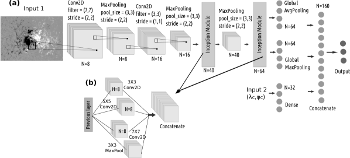
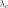
) وخط طوله ( ). لا توجد طبقات مترابطة بالكامل تعالج دخل المغناطوغرام مباشرة، ولذلك تستطيع CNN معالجة رقع مغناطوغرامات بأحجام متغيرة. (b) وحدة inception المستخدمة في CNN.
). لا توجد طبقات مترابطة بالكامل تعالج دخل المغناطوغرام مباشرة، ولذلك تستطيع CNN معالجة رقع مغناطوغرامات بأحجام متغيرة. (b) وحدة inception المستخدمة في CNN.نستخدم بيانات مغناطوغرامات LOS للغلاف الضوئي التي يوفرها HMI وGONG. لا يوفر GONG إلا مغناطوغرامات LOS. وتتضمن SHARPs المشتقة من HMI (سلسلة بيانات hmi.sharp_cea_720s (Bobra et al., 2014)) مغناطوغرامات متجهة ومغناطوغرامات LOS لرقع AR تُكتشف وتُتتبع آليًا أثناء دورانها عبر القرص الشمسي المرئي (Bobra et al., 2014). وتتوفر مغناطوغرامات HMI بمقياس صفيحي قدره
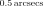
، أي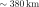
عند مركز القرص. وتتوفر مغناطوغرامات GONG بمقياس صفيحي قدره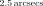
. وتقع المغناطوغرامات المتاحة في سلسلة hmi.sharp_cea_720s على شبكة أسطوانية متساوية المساحة (CEA)، وبذلك تُزال آثار الإسقاط. وبالمثل، نعيد إسقاط مغناطوغرامات AR من GONG على شبكة CEA. وندرب CNN للحصول على خصائص SHARPs مباشرة من مغناطوغرامات LOS الخاصة بكل من HMI وGONG. ولا ننظر إلا في أبرز خصائص SHARPs التي تنتج أقصى دقة للتنبؤ بالتوهجات في نموذج تعلم آلي (ML) (Bobra & Couvidat, 2015). وهذه الخصائص واردة في الجدول 2.تتأثر قياسات HMI بظروف الرصد وبالسرعة النسبية بين SDO والشمس (Hoeksema et al., 2014). وتدل راية QUALITY على ظروف الرصد، وننظر في القياسات التي تكون فيها متجهات Stokes موثوقة (QUALITY
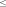
10000 بالنظام الست عشري) وعندما تكون السرعة النسبية بين SDO والشمس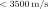
(Bobra & Ilonidis, 2016). وتكون البيانات الأقرب إلى الحافة أكثر ضجيجًا بسبب السرعات النسبية الأعلى وكذلك آثار الإسقاط. لذلك نقصر الرصدات على نطاق من خط الزوال المركزي. وعلاوة على ذلك، لا ندرج من سلسلة بيانات SHARPs إلا ARs التي تنمو إلى مساحة عظمى قدرها . وهذا يستبعد عددًا كبيرًا من ARs الصغيرة التي لا تنتج توهجات كبرى (من الفئة M أو X). ويأخذ حساب خصائص SHARPs باستخدام رصدات الحقول المتجهة من HMI في الاعتبار تلك البكسلات في مغناطوغرامات AR التي يكون حل التباس 180
من خط الزوال المركزي. وعلاوة على ذلك، لا ندرج من سلسلة بيانات SHARPs إلا ARs التي تنمو إلى مساحة عظمى قدرها . وهذا يستبعد عددًا كبيرًا من ARs الصغيرة التي لا تنتج توهجات كبرى (من الفئة M أو X). ويأخذ حساب خصائص SHARPs باستخدام رصدات الحقول المتجهة من HMI في الاعتبار تلك البكسلات في مغناطوغرامات AR التي يكون حل التباس 180
فيها موثوقًا (Bobra et al., 2014).تُستخدم الرصدات بين مايو 2010 وأغسطس 2018 لتدريب CNN؛ إذ يُستخدم نحو
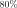
من البيانات للتدريب والتحقق من CNN، بينما تشكل البقية بيانات غير مرئية أو بيانات اختبار. ونقسم ARs زمنيًا إلى أقسام للتدريب والتحقق والاختبار: ARs في الفترة مايو 2010 - سبتمبر 2015 للتدريب والتحقق، والفترة أكتوبر 2015 - أغسطس 2018 للاختبار. وتُسحب عينات كل ست ساعات من السلسلة الزمنية لكل AR. وتنتمي جميع العينات من AR معين حصريًا إلى مجموعة التدريب أو مجموعة التحقق أو مجموعة الاختبار، لتجنب الانحيازات الناشئة من الترابط الزمني لرصدات AR واحد (Ahmadzadeh et al., 2021). وترد أعداد ARs ورصدات المغناطوغرامات المستخدمة للتدريب والتحقق والاختبار في الجدول 1. وبما أن النشاط الشمسي يعتمد على طور الدورة، فقد يسبب التقسيم الزمني انحيازًا في تدريب CNN. وبالفعل، فإن نسبة ARs المنتجة للتوهجات إلى غير المنتجة لها في بيانات الاختبار تساوي تقريبًا نصف قيمتها في مجموعة بيانات التدريب والتحقق (Bhattacharjee et al., 2020). ومع ذلك، فإن التقسيم الزمني ملائم لأدوات التنبؤ التشغيلي بالطقس الفضائي.3 الطرائق
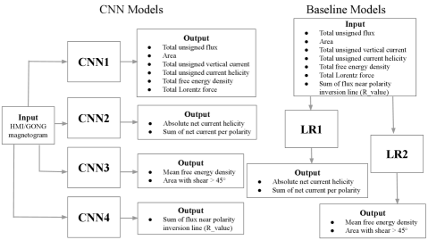
تُعد CNNs شبكات عصبية مزودة بمرشحات التفاف (نوى) تمسح بيانات الدخل، وهي عادة بيانات ثنائية الأبعاد 2D للصور، وتكتشف الأنماط المكانية لمهام مثل التصنيف والتعرف (LeCun et al., 2015; Goodfellow et al., 2016). ومرشحات الالتفاف هي عصبونات
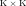
تنزلق فوق الصور وتكتشف أنماطًا مختلفة. وتمتلك مرشحات الالتفاف معاملات حرة؛ فلكل عصبون وزن ولكل مرشح التفاف انحياز
ولكل مرشح التفاف انحياز  . وتعالج العصبونات بكسلات المدخلات (أو المخرجات من الطبقات السابقة)
. وتعالج العصبونات بكسلات المدخلات (أو المخرجات من الطبقات السابقة) 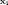
بإجراء العملية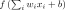
، حيث إن هي دالة التنشيط (Hastie et al., 2001). وتمتلك CNNs أيضًا طبقات تجميع تُستخدم لتقليل حجم الدخل مع تقدمه إلى مستويات أعمق من CNN. ويختار مرشح التجميع الأعظمي/المتوسط القيمة العظمى أو المتوسطة من خريطة الخصائص
هي دالة التنشيط (Hastie et al., 2001). وتمتلك CNNs أيضًا طبقات تجميع تُستخدم لتقليل حجم الدخل مع تقدمه إلى مستويات أعمق من CNN. ويختار مرشح التجميع الأعظمي/المتوسط القيمة العظمى أو المتوسطة من خريطة الخصائص 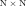
المعطاة. وتتبع طبقات التجميع عادةً طبقة التفاف في CNN لتقليل الأبعاد.نستخدم بنية CNN مع وحدات inception مشابهة لوحدات inception V1 من GoogleNet (Szegedy et al., 2015). ففي طبقة الالتفاف النموذجية، نستخدم مرشحات ذات حجم ثابت تعمل على أفضل نحو للمسألة المحددة. غير أن وحدات inception مصممة لاكتشاف أنماط على مقاييس طولية متنوعة قد تكون موجودة في الدخل. وهي تتضمن مرشحات التفاف بأحجام مختلفة في طبقة واحدة. وتُضم مخرجات جميع طبقات الالتفاف في وحدة inception وتُقدَّم بوصفها دخلًا إلى الطبقة اللاحقة. وتتألف وحدة inception المستخدمة هنا من ثلاثة مرشحات التفاف بأحجام
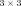
و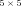
و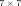
، ومن مرشح تجميع أعظمي واحد .
.
تظهر بنية CNN في الشكل 1. وتأخذ CNN مدخلين: i) مغناطوغرامات LOS لرقع AR، وii) خط عرض ( ) وخط طول (
) وخط طول (
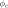
) مركز رقع AR. وتتكون CNN من طبقتي التفاف عاديتين تتبعهما وحدتا inception تعالجان مغناطوغرامات LOS. أما خطا العرض والطول فتتم معالجتهما بطبقة عصبونات مترابطة بالكامل. وتُخفض مخرجات طبقتي الالتفاف العاديتين ووحدة inception الأولى بواسطة طبقة تجميع أعظمي. وتُخفض مخرجات وحدة inception النهائية بواسطة طبقة تجميع أعظمي شاملة وكذلك طبقة تجميع متوسط شاملة. ثم تُضم هذه المخرجات إلى خرج الطبقة المترابطة بالكامل التي تعالج خطي الطول والعرض. وترتبط الطبقة المضمومة بطبقة خرج من العصبونات. ويساوي عدد العصبونات في طبقات الخرج عدد خصائص SHARPs التي يجري تقديرها (انظر الشكل 2). نستخدم دالة تنشيط خطية لطبقات الالتفاف، وهي تتعامل صراحةً مع القيم الموجبة والسالبة للبكسلات في مغناطوغرامات LOS على نحو متناظر. كما تمتلك طبقة العصبونات المترابطة بالكامل دالة تنشيط tanh للتعامل صراحةً مع القيم الموجبة والسالبة لخط العرض وخط الطول، بعد تطبيعها بين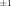
، على نحو متناظر. وتمتلك طبقة الخرج النهائية من العصبونات دالة تنشيط sigmoid (Han & Moraga, 1995; Hastie et al., 2001) لإعطاء القيمة المطبعة لخصائص SHARPs المقدرة بين و
و .
.
إن غياب الطبقات المترابطة بالكامل في الشبكة التي تعالج دخل مغناطوغرامات LOS يعني أن بنية CNN تستطيع تحليل مغناطوغرامات LOS ذات أحجام اعتباطية. وبما أن رقع AR ذات أبعاد متنوعة، فإن المغناطوغرامات في بيانات التدريب والتحقق والاختبار تكون كذلك ذات أحجام مختلفة تبعًا لذلك. ومن ثم لا تتطلب CNN الخاصة بنا معالجة مسبقة لتحويل المغناطوغرامات إلى حجم ثابت، وبذلك فهي خالية من الانحيازات التي قد تنشأ نتيجة إعادة التحجيم (Bhattacharjee et al., 2020).
نستخدم تحققًا بأسلوب الحجز المتكرر 10 مرات لتدريب CNN (Hastie et al., 2001). نقسم ARs عشوائيًا في مجموعتي التدريب والتحقق إلى ثلاثة أجزاء، ونستخدم بيانات جزأين للتدريب والجزء المتبقي للتحقق. وتُكرر هذه العملية تسع مرات مع ضمان أن تكون بيانات AR ما جزءًا من التدريب أو التحقق لا كليهما. ويُقارن خرج CNN بقيم خصائص SHARPs الأصلية. وتقع طبقة الخرج ذات دالة sigmoid في CNN ضمن مجال مستمر بين 0 و1. وتُطبّع خصائص SHARPs الأصلية بقسمتها على قيمها العظمى المعنية. ونقسم الخصائص المطبعة (ضمن المجال من 0 إلى 1) في مجموعة التدريب إلى عشرة صناديق متساوية العرض (0.1)، ونزيد عينات البيانات في كل صندوق لتطابق عدد العينات في الصندوق الأكبر تعدادًا. وتُقيَّس مغناطوغرامات الدخل، أي يُطرح متوسط ثم يُقسم المغناطوغرام الناتج على انحراف معياري لقيم الحقل المغناطيسي. ويُحسب المتوسط والانحراف المعياري المستخدمان في التقييس على جميع بكسلات جميع المغناطوغرامات في بيانات التدريب والتحقق للأداة المعنية. ويُقارن خرج CNN بقيم SHARPs الأصلية وتُحسب دالة الخسارة، المعرفة بأنها متوسط مربع الخطأ. وندرب CNN لتقليل متوسط مربع الخطأ عبر حقب مختلفة باستخدام الانحدار المتدرج العشوائي (Bottou, 1991; Hastie et al., 2001) مع معدل تعلم قدره 0.00007. وقد طُورت CNN باستخدام مكتبة Python المسماة keras.
4 النتائج
| 10-times Repeated-Holdout Validation | Test | |||
| SHARPs Features | HMI | GONG | HMI | GONG |
| Total unsigned flux | 95.14 00.62 | 90.87 01.96 | 89.73 02.70 | 87.42 01.39 |
| Area | 95.87 00.49 | 95.06 00.84 | 92.00 01.70 | 92.88 00.88 |
| Total unsigned vertical current | 94.78 00.71 | 91.80 01.69 | 88.86 02.57 | 89.00 01.76 |
| Total unsigned current helicity | 95.74 00.50 | 91.65 01.76 | 88.33 02.65 | 83.31 02.28 |
| Total free energy density | 96.19 00.80 | 92.60 01.60 | 90.17 02.37 | 91.22 01.25 |
| Total Lorentz force | 96.64 00.47 | 94.94 00.98 | 90.63 02.46 | 92.71 00.87 |
| Absolute net current helicity | 90.37 03.28 | 63.76 03.65 | 57.83 08.84 | 57.60 06.97 |
| Sum of net current per polarity | 89.51 02.53 | 64.58 03.08 | 61.93 07.63 | 59.09 06.96 |
| Mean free energy density | 95.10 01.00 | 89.92 00.79 | 92.13 01.80 | 91.73 00.54 |
| Area with shear | 95.02 00.81 | 90.00 01.19 | 90.59 01.57 | 90.48 00.46 |
| Flux near polarity inversion line | 90.54 00.56 | 76.28 01.83 | 77.11 00.79 | 70.43 00.79 |
 . وترتبط خصائص SHARPs بعضها ببعض (Dhuri et al., 2019)، ولذلك رُتبت في أربع مجموعات بوصفها خصائص تعتمد على (i) مساحة AR، و(ii) التيار الكهربائي، و(iii) متوسط كثافة الطاقة الحرة، و(iv) قيمة R، أي مجموع الفيض قرب خط انعكاس القطبية (Schrijver, 2007).
. وترتبط خصائص SHARPs بعضها ببعض (Dhuri et al., 2019)، ولذلك رُتبت في أربع مجموعات بوصفها خصائص تعتمد على (i) مساحة AR، و(ii) التيار الكهربائي، و(iii) متوسط كثافة الطاقة الحرة، و(iv) قيمة R، أي مجموع الفيض قرب خط انعكاس القطبية (Schrijver, 2007).| 10-times Repeated-Holdout Validation | Test | |||
| SHARPs Features | HMI | GONG | HMI | GONG |
| Total unsigned flux | 86.92 01.13 | 86.27 01.75 | 81.19 01.74 | 77.11 02.20 |
| Area | 89.57 01.10 | 92.11 00.75 | 87.10 01.33 | 86.91 01.21 |
| Total unsigned vertical current | 86.82 01.41 | 87.34 01.38 | 81.22 02.10 | 79.07 02.52 |
| Total unsigned current helicity | 87.37 01.41 | 87.49 01.48 | 82.61 02.24 | 79.40 02.69 |
| Total free energy density | 84.23 01.46 | 85.53 02.17 | 81.32 03.27 | 80.11 02.42 |
| Total Lorentz force | 90.63 01.04 | 92.78 00.98 | 86.96 01.51 | 86.49 01.66 |
| Absolute net current helicity | 59.61 05.26 | 59.35 03.36 | 57.70 06.29 | 2.27 02.73 |
| Sum of net current per polarity | 60.02 03.95 | 65.75 02.95 | 57.51 02.58 | 7.85 02.79 |
| Mean free energy density | 92.02 00.97 | 91.59 00.92 | 93.02 01.42 | 92.58 00.35 |
| Area with shear | 93.19 00.98 | 90.08 00.54 | 91.63 00.65 | 89.96 00.37 |
| Flux near polarity inversion line | 91.69 00.47 | 76.63 02.60 | 83.00 00.85 | 75.32 00.92 |
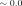
.| 10-times Repeated-Holdout Validation | Test | |||
|---|---|---|---|---|
| SHARPs Features | Pearson | Spearman | Pearson | Spearman |
| Absolute net current helicity | ||||
| Sum of net current per polarity | ||||
| Mean free energy density | ||||
| Area with shear | ||||
 .
.4.1 تقدير خصائص الحقول المغناطيسية المتجهة في AR باستخدام CNN
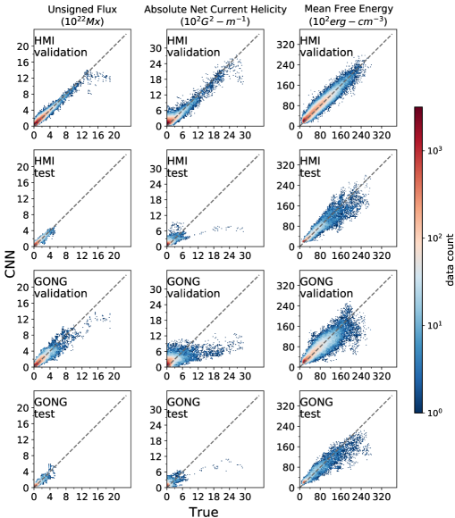
 مرجعًا.
مرجعًا.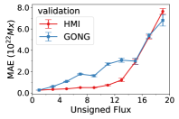
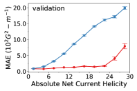
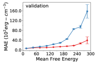
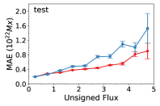
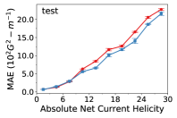
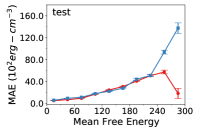
 لكل صندوق. وينطبق المفتاح في اللوحة العلوية اليسرى على جميع اللوحات.
لكل صندوق. وينطبق المفتاح في اللوحة العلوية اليسرى على جميع اللوحات.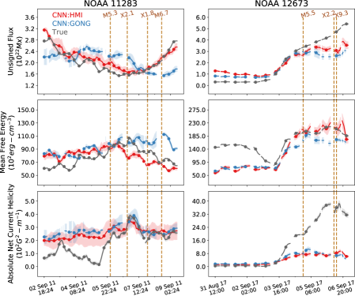
 من خط الزوال المركزي. يبين المخطط الأيسر نتيجة نموذجية (انظر شكل الملحق 9 لكل ARs ذات التوهجات الكبرى). ويبين المخطط الأيمن حدثًا متطرفًا مع أكبر توهج رُصد في الدورة 24. وتقابل الفجوات الرصدات المفقودة، وتُعرض أشرطة خطأ 1-
من خط الزوال المركزي. يبين المخطط الأيسر نتيجة نموذجية (انظر شكل الملحق 9 لكل ARs ذات التوهجات الكبرى). ويبين المخطط الأيمن حدثًا متطرفًا مع أكبر توهج رُصد في الدورة 24. وتقابل الفجوات الرصدات المفقودة، وتُعرض أشرطة خطأ 1- . وينطبق المفتاح في أعلى اليسار على جميع المخططات. وقد مُلست المخططات بمتوسط جار مدته ست ساعات.
. وينطبق المفتاح في أعلى اليسار على جميع المخططات. وقد مُلست المخططات بمتوسط جار مدته ست ساعات.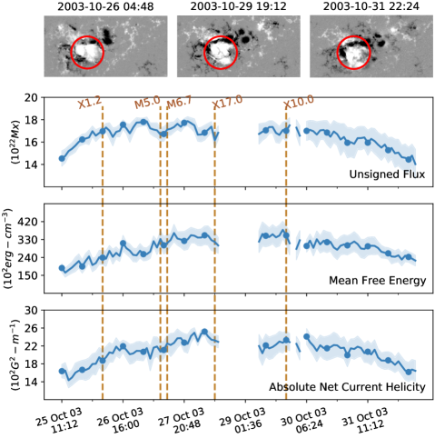
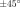
من خط الزوال المركزي، غير معروضة)، المميزة بدوران البقعة ذات القطبية الموجبة (Zhang et al., 2008; Kazachenko et al., 2010)، والمبرزة داخل الدائرة الحمراء. وتُشبَّع القطبيات الموجبة (الأبيض) والسالبة (الأسود) عند 1000 G. (أسفل) الفيض الكلي غير الموقّع، ومتوسط كثافة الطاقة الحرة، واللولبية الصافية المطلقة للتيار المقدرة بواسطة CNN أثناء هذه العواصف، مظهرة ارتفاعًا منهجيًا يؤدي إلى التوهجات. وتلتقط CNN بدقة حقن اللولبية الناتج عن دوران البقعة الشمسية، مظهرة زيادة مهمة في متوسط كثافة الطاقة الحرة ولولبية التيار الكهربائي. وتقابل الفجوات الرصدات المفقودة، وتُعرض أشرطة خطأ 1- . وقد مُلست المخططات بمتوسط جار مدته ست ساعات.
. وقد مُلست المخططات بمتوسط جار مدته ست ساعات.| Total unsigned flux | Absolute net current helicity | Mean free energy density | |||||
|---|---|---|---|---|---|---|---|
| Spline Fit | Time Derivative | Spline Fit | Time Derivative | Spline Fit | Time Derivative | ||
| Validation | HMI | 97.41 00.37 | 84.46 02.75 | 94.99 02.02 | 77.70 12.16 | 98.54 00.38 | 89.68 02.50 |
| GONG | 91.62 01.94 | 25.51 08.68 | 66.12 03.73 | 33.23 05.40 | 92.12 07.77 | 75.52 02.29 | |
| Test | HMI | 90.50 02.60 | 75.18 06.81 | 60.21 09.21 | 32.44 18.33 | 94.14 01.52 | 82.06 03.06 |
| GONG | 88.63 01.48 | 18.07 06.22 | 59.72 07.14 | 27.03 07.81 | 93.69 00.49 | 70.52 01.91 | |
| Feature | accuracy | recall(+) | recall(-) | TSS |
|---|---|---|---|---|
| True SHARPs | ||||
| Total unsigned flux | 87.04 02.36 | 51.16 18.79 | 88.99 02.95 | 40.16 17.15 |
| Area | 85.27 02.16 | 58.78 17.32 | 86.67 02.71 | 45.45 15.55 |
| Total unsigned vertical current | 88.19 02.75 | 64.39 07.67 | 89.50 03.00 | 53.89 07.14 |
| Total unsigned current helicity | 89.81 02.82 | 66.17 05.76 | 91.15 02.99 | 57.32 06.20 |
| Total free energy density | 89.77 02.04 | 52.17 11.96 | 91.84 02.33 | 44.01 11.07 |
| Total Lorentz force | 87.68 02.47 | 52.39 16.75 | 89.60 02.90 | 41.99 15.55 |
| Absolute net current helicity | 91.01 02.17 | 58.29 08.63 | 92.92 02.40 | 51.21 08.32 |
| Sum of net current per polarity | 90.96 01.99 | 60.64 08.29 | 92.72 02.30 | 53.37 07.56 |
| Mean free energy density | 76.56 02.94 | 70.16 04.95 | 76.92 03.09 | 47.08 05.98 |
| Area with shear | 67.15 03.32 | 74.55 04.39 | 66.72 03.54 | 41.27 05.54 |
| Log of flux near polarity inversion line | 67.57 03.83 | 97.98 01.63 | 65.83 04.05 | 63.81 05.06 |
| CNN:HMI | ||||
| Total unsigned flux | 85.01 02.69 | 69.52 08.66 | 85.87 02.99 | 55.39 07.65 |
| Area | 83.54 01.84 | 70.88 06.98 | 84.23 02.17 | 55.11 05.36 |
| Total unsigned vertical current | 85.51 02.59 | 71.04 07.54 | 86.30 02.94 | 57.34 06.02 |
| Total unsigned current helicity | 86.39 02.23 | 69.81 06.28 | 87.32 02.46 | 57.13 05.36 |
| Total free energy density | 88.02 02.00 | 61.87 08.08 | 89.48 02.30 | 51.35 06.68 |
| Total Lorentz force | 86.04 02.74 | 68.47 09.26 | 87.03 02.94 | 55.50 08.97 |
| Absolute net current helicity | 88.70 02.03 | 72.11 06.77 | 89.62 02.14 | 61.73 06.52 |
| Sum of net current per polarity | 88.82 02.22 | 73.94 08.13 | 89.64 02.42 | 63.58 07.50 |
| Mean free energy density | 76.33 02.68 | 69.17 05.34 | 76.72 02.87 | 45.89 05.40 |
| Area with shear | 71.55 02.72 | 70.73 08.44 | 71.57 03.00 | 42.30 07.84 |
| Log of flux near polarity inversion line | 76.62 02.80 | 91.88 03.58 | 75.72 03.16 | 67.59 02.28 |
| CNN:GONG | ||||
| Total unsigned flux | 87.01 02.44 | 53.17 11.56 | 88.87 02.84 | 42.05 10.34 |
| Area | 84.32 02.57 | 60.14 12.87 | 85.62 02.98 | 45.76 11.51 |
| Total unsigned vertical current | 87.06 02.43 | 54.33 11.78 | 88.87 02.83 | 43.20 10.66 |
| Total unsigned current helicity | 88.15 02.42 | 49.19 13.78 | 90.30 02.83 | 39.49 12.85 |
| Total free energy density | 89.44 01.69 | 41.35 17.17 | 92.11 02.34 | 33.45 15.85 |
| Total Lorentz force | 86.96 02.39 | 48.25 19.33 | 89.06 02.82 | 37.30 18.34 |
| Absolute net current helicity | 91.26 02.18 | 54.50 11.18 | 93.39 02.34 | 47.89 11.16 |
| Sum of net current per polarity | 90.79 01.77 | 52.30 10.90 | 93.02 02.06 | 45.32 10.61 |
| Mean free energy density | 77.19 03.73 | 67.10 07.69 | 77.76 04.08 | 44.86 07.50 |
| Area with shear | 70.50 04.47 | 73.21 07.29 | 70.32 04.84 | 43.53 07.77 |
| Log of flux near polarity inversion line | 78.22 04.06 | 84.98 03.89 | 77.82 04.38 | 62.80 04.83 |
 .
.| Flare forecasting using CNN obtained SHARPs features | ||||
|---|---|---|---|---|
| Number of observations | ||||
| # Positives | 338 | |||
| # Negatives | 6011 | |||
| accuracy | recall(+) | recall(-) | TSS | |
| True SHARPs | 0.842 0.030 | 0.856 0.044 | 0.841 0.033 | 0.697 0.045 |
| CNN:HMI | 0.812 0.028 | 0.869 0.056 | 0.809 0.031 | 0.677 0.046 |
| CNN:GONG | 0.818 0.031 | 0.801 0.064 | 0.819 0.035 | 0.621 0.056 |
| True SHARPs (Bobra & Couvidat, 2015) | 0.924 0.007 | 0.832 0.042 | 0.929 0.008 | 0.761 0.039 |
 .
.إن خصائص SHARPs المدروسة (الواردة في الشكل 2 والجدول 2) مترابطة فيما بينها، وتنقسم إلى أربع مجموعات استنادًا إلى ارتباطات Pearson المتبادلة (Dhuri et al., 2019): (i) خصائص تعتمد على مساحة ARs، أي خصائص ممتدة تشمل مساحة AR، والفيض الكلي غير الموقّع، والتيار الرأسي الكلي غير الموقّع، ولولبية التيار الكلية غير الموقعة، وكثافة الطاقة الحرة الكلية، وقوة Lorentz الكلية؛ و(ii) خصائص تعتمد على التيار الكهربائي في ARs، أي اللولبية الصافية المطلقة للتيار ومجموع التيار الصافي لكل قطبية؛ و(iii) خصائص تعتمد فقط على الطاقة غير الجهدية في ARs، أي متوسط كثافة الطاقة الحرة والمساحة ذات القص
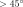
؛ وأخيرًا (iv) قيمة Schrijver المسماة R_value (Schrijver, 2007)، أي مجموع الفيض على خط انعكاس القطبية. وبوجه عام، نطور أربع CNNs مختلفة (الشكل 2) لتقدير خصائص SHARPs من هذه المجموعات الأربع المعنية. ولكل CNN، تتألف طبقة الخرج من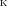
عصبونات لتقدير من خصائص SHARPs المقابلة لكل من المجموعات الأربع.
من خصائص SHARPs المقابلة لكل من المجموعات الأربع.
ترتبط الخصائص الممتدة بقوة بالفيض الكلي غير الموقّع في AR، الذي يعتمد فقط على المركبة الشعاعية للحقل المغناطيسي. وتُقدّر المركبة الشعاعية تقليديًا من حقل LOS المغناطيسي في AR باستخدام تقريب الحقل الجهدي (Leka et al., 2017). وباستخدام CNN، نقدّر هذه الخصائص الممتدة مباشرة من غير الحاجة أولًا إلى تقدير الحقل المغناطيسي الشعاعي. وتعتمد R_value فقط على حقل LOS المغناطيسي ويمكن حسابها مباشرة باستخدام مغناطوغرامات GONG LOS. غير أنه لمطابقة R_value الخاصة بـ HMI SHARPs، تحتاج حقول GONG LOS المغناطيسية إلى معايرة تبادلية. ومن المتوقع أن تتعلم نماذج CNN ضمنيًا المعايرة بين الأدوات أثناء التدريب (Munoz-Jaramillo et al., 2022)، كما يُتوقع أن تكون قيم SHARPs المقدرة معايرة تبادليًا تلقائيًا.
على خلاف الخصائص الممتدة، يتطلب التقدير الدقيق لـ SHARPs التي تعتمد على التيار الكهربائي ومتوسط الطاقة الحرة معرفة صريحة بالحقول المغناطيسية المتجهة الكاملة. وهذه الخصائص مهمة لفهم محفزات العواصف الشمسية، وتُقدر عادة بافتراض نماذج للحقل المغناطيسي، مثل نماذج الحقل الخطي وغير الخطي الخالي من القوة (Régnier & Priest, 2007). هنا، نقدم تقديرًا قائمًا على البيانات بالكامل لهذه الخصائص باستخدام CNN. ومن أجل تقييم أداء CNN، نستخدم نماذج الانحدار الخطي (LR) بوصفها مرجعًا. ونطور نموذجين منفصلين من LR، أحدهما للخصائص التي تعتمد على التيار الكهربائي والآخر للخصائص التي تعتمد على الطاقة الحرة، على التوالي. ويكون دخل نماذج LR هو الخصائص الممتدة وR_Value. وينتج نموذج LR الأول اللولبية الصافية المطلقة للتيار ومجموع التيار الصافي لكل قطبية بوصفهما خرجًا، في حين ينتج الثاني متوسط كثافة الطاقة الحرة والمساحة ذات القص  بوصفهما خرجًا. ويعرض الشكل 2 مخططًا لنماذج CNN وكذلك للنماذج المرجعية.
بوصفهما خرجًا. ويعرض الشكل 2 مخططًا لنماذج CNN وكذلك للنماذج المرجعية.
نستخدم ارتباطي Pearson وSpearman لقياس أداء CNN والنماذج المرجعية. يقيس ارتباط Pearson ارتباطًا خطيًا بين القيم الحقيقية والمقدرة لخصائص الحقول المغناطيسية المتجهة. أما ارتباط Spearman فهو ارتباط رتب يلتقط العلاقة الرتيبة بين القيم الحقيقية والمقدرة إضافة إلى العلاقة الخطية التي يقيسها ارتباط Pearson. وترد ارتباطات Pearson وSpearman لخصائص الحقول المغناطيسية المتجهة المقدرة بواسطة CNN في الجدولين 2 و 3 على التوالي. أما بالنسبة إلى النماذج المرجعية، فترد هذه الارتباطات في الجدول 4.
من الجدول 2، تبدو ارتباطات Pearson لخصائص الحقول المتجهة المقدرة بواسطة CNN أعلى في HMI منها في GONG، ومن ثم يبدو أنها تعتمد على الدقة المكانية لمغناطوغرامات LOS. بالنسبة إلى HMI، تعطي الخصائص الممتدة المقدرة بواسطة CNN ارتباط Pearson قدره
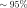
لبيانات التحقق و لبيانات الاختبار. أما بالنسبة إلى بيانات GONG، فالارتباط المقابل هو
لبيانات الاختبار. أما بالنسبة إلى بيانات GONG، فالارتباط المقابل هو  . ولا تبلغ ارتباطات Pearson للقيم المقدرة بواسطة CNN للخصائص الممتدة القيمة المثالية ، لأن حساب SHARPs لا يأخذ في الاعتبار جميع البكسلات، بل لا يأخذ إلا تلك التي يكون فيها إزالة الالتباس عن المركبة السمتية للحقل المغناطيسي موثوقًا (Bobra et al., 2014). ومن الجدول 3، فإن ارتباطات Spearman للخصائص الممتدة أقل قليلًا فقط من ارتباطات Pearson المقابلة، ما يعني أن ترتيب الخصائص المقدرة متسق عمومًا مع الترتيب الحقيقي.
. ولا تبلغ ارتباطات Pearson للقيم المقدرة بواسطة CNN للخصائص الممتدة القيمة المثالية ، لأن حساب SHARPs لا يأخذ في الاعتبار جميع البكسلات، بل لا يأخذ إلا تلك التي يكون فيها إزالة الالتباس عن المركبة السمتية للحقل المغناطيسي موثوقًا (Bobra et al., 2014). ومن الجدول 3، فإن ارتباطات Spearman للخصائص الممتدة أقل قليلًا فقط من ارتباطات Pearson المقابلة، ما يعني أن ترتيب الخصائص المقدرة متسق عمومًا مع الترتيب الحقيقي.
إن قيم ارتباطي Pearson وSpearman للخصائص التي تعتمد على الطاقة غير الجهدية مرتفعة بدرجة ملحوظة  عبر مجموعات بيانات التحقق والاختبار. كما أن قيم الارتباط هذه أعلى
عبر مجموعات بيانات التحقق والاختبار. كما أن قيم الارتباط هذه أعلى
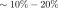
مقارنة بنموذج الانحدار الخطي المرجعي (الجدول 4). وهذه الخصائص، وهي متوسط كثافة الطاقة الحرة والمساحة ذات القص ، تعتمد صراحة على الحقل المغناطيسي المتجه الكامل.
، تعتمد صراحة على الحقل المغناطيسي المتجه الكامل.
بالنسبة إلى الخصائص التي تعتمد على التيار الكهربائي، أي اللولبية الصافية المطلقة للتيار ومجموع التيار الصافي لكل قطبية، لا يتفوق أداء CNN على النموذج المرجعي. فبينما تكون ارتباطات Pearson للتحقق أعلى  مقارنة بالمرجع البالغ
مقارنة بالمرجع البالغ  ، فإن ارتباطات Spearman متساوية تقريبًا (ضمن حدود أشرطة الخطأ) عند
، فإن ارتباطات Spearman متساوية تقريبًا (ضمن حدود أشرطة الخطأ) عند  . كما تفشل CNN في التعميم إلى بيانات الاختبار، إذ تحقق درجات ارتباط Pearson وSpearman منخفضة مقدارها
. كما تفشل CNN في التعميم إلى بيانات الاختبار، إذ تحقق درجات ارتباط Pearson وSpearman منخفضة مقدارها
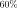
لكل منهما.يعرض الشكل 3 تمثيلات بمخططات مبعثرة للارتباط بين خصائص SHARPs الحقيقية والمقدرة بواسطة CNN لكل من HMI وGONG من مجموعات التحقق العشر. وبالنسبة إلى HMI، تتطابق القيم الحقيقية والمشتقة من CNN غالبًا على نحو وثيق نسبيًا، باستثناء القيم الصغيرة جدًا فقط (
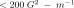
) للولبية الصافية المطلقة للتيار حيث تكون تقديرات CNN أكبر بكثير. وبالنسبة إلى بيانات اختبار HMI وكذلك بيانات GONG، فإن تقدير CNN للولبية الصافية المطلقة للتيار عند القيم الكبيرة ( ) يكون باستمرار على الجانب الأدنى (
) يكون باستمرار على الجانب الأدنى (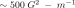
). ويبين الشكل 4 صراحةً متوسط الأخطاء المطلقة في تقدير CNN بدلالة القيم الحقيقية لـ HMI وGONG. وتُظهر متوسطات الأخطاء المطلقة في القيم المقدرة بواسطة CNN من مغناطوغرامات GONG اعتمادًا أعلى على القيم الحقيقية مقارنة بـ HMI، وتزداد بدرجة كبيرة مع زيادة القيم الحقيقية للخصائص المعنية، ولا سيما في بيانات التحقق. وبالنسبة إلى الفيض الكلي غير الموقّع، تكون متوسطات الأخطاء المطلقة للخصائص المقدرة بواسطة CNN لكل من HMI وGONG أعلى بكثير عند القيم المتطرفة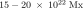
. وبالنسبة إلى بيانات اختبار HMI وبيانات GONG، تكون متوسطات الأخطاء المطلقة أعلى بأكثر من 12 مرات عند المقادير الكبيرة (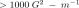
) للولبية الصافية المطلقة للتيار مقارنة ببيانات تحقق HMI. ومتوسط الأخطاء النسبية لكل من GONG وHMI قابل للمقارنة عند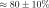
و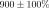
و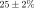
للفيض الكلي غير الموقّع، واللولبية الصافية المطلقة للتيار، ومتوسط كثافة الطاقة الحرة على التوالي. وتعني الأخطاء النسبية المتوسطة العالية أن تقديرات CNN بعيدة عن القيم الحقيقية، ولا سيما بالنسبة إلى خصائص SHARPs ذات القيم الحقيقية المنخفضة. وتُظهر خصائص SHARPs من ARs التي تنتج توهجًا كبيرًا واحدًا على الأقل (M5 أو أكبر) انخفاضًا مهمًا في متوسط الأخطاء النسبية، عند نحو و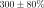
و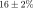
على التوالي.4.2 التطور الزمني للخصائص المشتقة من CNN في المناطق النشطة المنتجة للتوهجات
من أجل فهم ديناميكيات الحقول المغناطيسية في AR وتحسين التنبؤ بالعواصف الشمسية، من المهم أن تكون التغيرات الزمنية لـ SHARPs المقدرة بواسطة CNN مطابقة بأمانة لـ SHARPs الحقيقية. نقيس الاتجاهات في التطور الزمني لخصائص SHARPs في AR ما بملاءمة القيم المرصودة والمقدرة بواسطة CNN بمنحنيات spline ملساء وحساب المشتقات الزمنية عدديًا. ويورد الجدول 5 ارتباطات Pearson بين المشتقات الزمنية لمنحنيات spline الملائمة للقيم الحقيقية والقيم المقدرة بواسطة CNN للفيض الكلي غير الموقّع، واللولبية الصافية المطلقة للتيار، ومتوسط كثافة الطاقة الحرة. ونجد أن ارتباطات Pearson عالية، ، بالنسبة إلى HMI، باستثناء قيم اللولبية الصافية المطلقة للتيار من بيانات الاختبار. أما بالنسبة إلى GONG، فإن ارتباطات Pearson لمتوسط كثافة الطاقة الحرة وحدها عالية بما يكفي،  ، لتشير إلى أن الاتجاهات المقابلة ملتقطة بدقة معقولة في الخصائص المقدرة بواسطة CNN. ويبدو أن هذه التباينات بين اتجاهات القيم المقدرة بواسطة CNN من GONG والقيم الحقيقية هي نتيجة للدقة الأقل لمغناطوغرامات GONG.
، لتشير إلى أن الاتجاهات المقابلة ملتقطة بدقة معقولة في الخصائص المقدرة بواسطة CNN. ويبدو أن هذه التباينات بين اتجاهات القيم المقدرة بواسطة CNN من GONG والقيم الحقيقية هي نتيجة للدقة الأقل لمغناطوغرامات GONG.
تُعرض في الشكل 5 مقارنة للتطور الزمني للخصائص الحقيقية والمقدرة بواسطة CNN المستحصل عليها من HMI وGONG لمناطق ARs مفردة تنتج توهجًا كبيرًا واحدًا على الأقل (M5 أو أكبر). وتتفق القيم الحقيقية والمقدرة بواسطة CNN للفيض الكلي غير الموقّع، واللولبية الصافية المطلقة للتيار، ومتوسط كثافة الطاقة الحرة، ولا سيما بالنسبة إلى HMI، إذ تلتقط تطور هذه الخصائص قبل التوهجات وبعدها. ولا تحدث الاختلافات بين الخصائص الحقيقية والمقدرة بواسطة CNN إلا عند القيم المتطرفة لهذه الخصائص. فمثلًا، بالنسبة إلى توهج X9.3 في NOAA 12673 في سبتمبر 2017، الذي كان أكبر توهج في الدورة 24، تقدّر CNN بدقة ارتفاع الفيض الكلي غير الموقّع وكذلك متوسط كثافة الطاقة الحرة قبل التوهج. وترتفع اللولبية الصافية المطلقة للتيار إلى قيم عالية على نحو غير معتاد قبل توهج X9.3 ( أكثر من القيم العظمى الموجودة في بيانات التدريب)، ولذلك تكون تقديرات CNN المقابلة غير دقيقة. وترد أمثلة أخرى لمقارنات التطور الزمني بين الخصائص الحقيقية والمقدرة بواسطة CNN من ARs التي تنتج توهجًا واحدًا على الأقل من فئة M5 أو أكبر في شكل الملحق 9.
أكثر من القيم العظمى الموجودة في بيانات التدريب)، ولذلك تكون تقديرات CNN المقابلة غير دقيقة. وترد أمثلة أخرى لمقارنات التطور الزمني بين الخصائص الحقيقية والمقدرة بواسطة CNN من ARs التي تنتج توهجًا واحدًا على الأقل من فئة M5 أو أكبر في شكل الملحق 9.
ومن ثم فإن تقدير CNN لخصائص SHARPs في ARs المنتجة للتوهجات مفيد لفهم تطور الحقل المغناطيسي في AR المؤدي إلى عواصف شمسية عنيفة بوجه خاص في الماضي. فقد أنتجت عواصف الهالوين في أكتوبر 2003 توهجات قصوى من AR NOAA 10486 بمقادير X17.0 وX10.0 وأكبر توهج مسجل X28.0 (Pulkkinen et al., 2005). وقد تميز تطور الحقل المغناطيسي المؤدي إلى هذه التوهجات القصوى بدوران قطبية موجبة كبرى في البقعة الشمسية من النوع delta كما هو مبين في اللوحة العلوية من الشكل 6 (Zhang et al., 2008). ومن دون معرفة الحقول المغناطيسية المتجهة، سبق نمذجة الطاقة الحرة ولولبية التيار أثناء هذه العواصف اعتمادًا على مبرهنة virial المغناطيسية (Metcalf et al., 2005; Régnier & Priest, 2007)، واستقراء الحقول الخطية/غير الخطية الخالية من القوة (Régnier & Priest, 2007)، ونموذج Minimum Current Corona (Kazachenko et al., 2010). ونحصل على تقديرات CNN خالية من النماذج وقائمة على البيانات بالكامل للفيض الكلي غير الموقّع، واللولبية الصافية المطلقة للتيار، ومتوسط كثافة الطاقة الحرة أثناء هذه العواصف باستخدام مغناطوغرامات LOS. غير أن رصدات HMI غير متاحة لهذه الفترة. لذلك نستخدم CNN المدربة بمغناطوغرامات HMI لمعالجة رصدات LOS من MDI أثناء عواصف الهالوين لتقدير التطور الزمني للفيض الكلي غير الموقّع، واللولبية الصافية المطلقة للتيار، ومتوسط كثافة الطاقة الحرة. واستُبعد توهج X28.0 لأنه حدث خارج
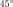
من خط الزوال المركزي. وعلى وجه الخصوص، ترتفع اللولبية الصافية المطلقة للتيار المقدرة بواسطة CNN للمنطقة NOAA 10486 باستمرار بمقدار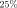
بين توهج X1.2 وتوهج X17.0، بما يقابل دوران البقعة الشمسية المرصود. وقد أُبلغ عن ارتفاع تدريجي مماثل في فيض اللولبية المنمذج بمقدار بين توهج X1.2 وتوهج X17.0 (Kazachenko et al., 2010)، ناجم أساسًا عن حقن اللولبية من دوران البقعة الشمسية. وتُظهر تقديرات CNN أن اللولبية الصافية المطلقة للتيار تبقى مرتفعة وصولًا إلى توهج X10.0 ثم تنخفض بعد ذلك. كما يرتفع متوسط كثافة الطاقة الحرة المقدر بواسطة CNN وصولًا إلى توهجي X17.0 وX10.0.
لاحظ أن هذه القيم المقدرة بواسطة CNN من مغناطوغرامات MDI لا يُتوقع أن تكون مصححة للمعايرة المتبادلة بين أداتي MDI وHMI، لأن CNN دُربت بمغناطوغرامات HMI فقط. ويورد الجدول 8 في الملحق ارتباطات Pearson وSpearman بين القيم الحقيقية والقيم المقدرة بواسطة CNN باستخدام مغناطوغرامات خط البصر من MDI، خلال فترة التداخل بين MDI وHMI. وهذه القيم الارتباطية أدنى بكثير مقارنة بتلك المقدرة من مغناطوغرامات HMI (الجدولان 2 و3). لذلك يتطلب التقدير الصارم أولًا تقييس مغناطوغرامات MDI وHMI (مثلًا، باستخدام مقاربات أخرى كالدقة الفائقة (Munoz-Jaramillo et al., 2022)). كما استخدمنا مغناطوغرامات GONG لتقدير خصائص الحقول المتجهة أثناء العواصف باستخدام CNN المدربة مع GONG (انظر شكل الملحق 10). وتقع قيم خصائص الحقول المتجهة المقدرة باستخدام مغناطوغرامات GONG ضمن المجال المتطرف، كما هو متوقع أثناء العواصف. غير أن حساسية هذه القيم المقدرة للتغيرات في الحقل المغناطيسي قبل التوهج وبعده أقل مقارنة بالخصائص المقدرة من MDI.
بين توهج X1.2 وتوهج X17.0 (Kazachenko et al., 2010)، ناجم أساسًا عن حقن اللولبية من دوران البقعة الشمسية. وتُظهر تقديرات CNN أن اللولبية الصافية المطلقة للتيار تبقى مرتفعة وصولًا إلى توهج X10.0 ثم تنخفض بعد ذلك. كما يرتفع متوسط كثافة الطاقة الحرة المقدر بواسطة CNN وصولًا إلى توهجي X17.0 وX10.0.
لاحظ أن هذه القيم المقدرة بواسطة CNN من مغناطوغرامات MDI لا يُتوقع أن تكون مصححة للمعايرة المتبادلة بين أداتي MDI وHMI، لأن CNN دُربت بمغناطوغرامات HMI فقط. ويورد الجدول 8 في الملحق ارتباطات Pearson وSpearman بين القيم الحقيقية والقيم المقدرة بواسطة CNN باستخدام مغناطوغرامات خط البصر من MDI، خلال فترة التداخل بين MDI وHMI. وهذه القيم الارتباطية أدنى بكثير مقارنة بتلك المقدرة من مغناطوغرامات HMI (الجدولان 2 و3). لذلك يتطلب التقدير الصارم أولًا تقييس مغناطوغرامات MDI وHMI (مثلًا، باستخدام مقاربات أخرى كالدقة الفائقة (Munoz-Jaramillo et al., 2022)). كما استخدمنا مغناطوغرامات GONG لتقدير خصائص الحقول المتجهة أثناء العواصف باستخدام CNN المدربة مع GONG (انظر شكل الملحق 10). وتقع قيم خصائص الحقول المتجهة المقدرة باستخدام مغناطوغرامات GONG ضمن المجال المتطرف، كما هو متوقع أثناء العواصف. غير أن حساسية هذه القيم المقدرة للتغيرات في الحقل المغناطيسي قبل التوهج وبعده أقل مقارنة بالخصائص المقدرة من MDI.
4.3 التنبؤ بالتوهجات باستخدام الخصائص المشتقة من CNN
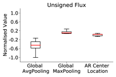
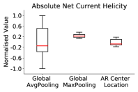
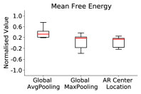
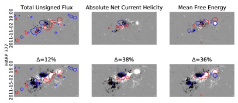
 النسبة المئوية للتغير في القيم المطبعة للخصائص المعنية بين الرصد الحالي والرصد المرجعي. وشريط الألوان للمغناطوغرامات مشبع عند . وقد مُلست خرائط الإسناد IG بمرشح Gaussian ذي انحراف معياري 10 بكسلات قبل الحصول على الكنتورات.
النسبة المئوية للتغير في القيم المطبعة للخصائص المعنية بين الرصد الحالي والرصد المرجعي. وشريط الألوان للمغناطوغرامات مشبع عند . وقد مُلست خرائط الإسناد IG بمرشح Gaussian ذي انحراف معياري 10 بكسلات قبل الحصول على الكنتورات.استُخدمت خصائص SHARPs على نطاق واسع في بناء نماذج التنبؤ بالتوهجات باستخدام ML (Bobra & Couvidat, 2015; Bobra & Ilonidis, 2016; Nishizuka et al., 2017; Dhuri et al., 2019; Chen et al., 2019; Ahmadzadeh et al., 2021). ومن أجل تقييم فائدة SHARPs المقدرة بواسطة CNN في مهام التنبؤ بالتوهجات، نقارن أداءها في التنبؤ بالتوهجات مع SHARPs الحقيقية. ونصوغ مسألة التنبؤ بتوهجات الفئتين M/X مع إنذار مسبق قدره 24h على نحو مشابه لـ Bobra & Couvidat (2015). ونستخدم مقاربتين للمقارنة. أولًا، نبني نماذج تصنيف بتحليل التمييز الخطي (LDA) باستخدام خاصية واحدة من SHARPs في كل مرة. وهذا يتيح مقارنة مباشرة بين القيم الحقيقية والقيم المقدرة بواسطة CNN لكل خاصية من خصائص SHARPs في التنبؤ بالتوهجات. ثانيًا، نستخدم جميع خصائص SHARPs معًا لتدريب آلة متجهات الدعم (SVM) على التنبؤ بالتوهجات. ونقيس أداء التنبؤ بالتوهجات باستخدام الدقة، والاستدعاء، ودرجة إحصاء المهارة الحقيقية (TSS) (Peirce, 1884). غير أن المقياسين الأخيرين وحدهما متينان تجاه عدم توازن الفئات السائد في مسألة التنبؤ بالتوهجات (Bobra & Couvidat, 2015; Ahmadzadeh et al., 2021)، ولذلك فهما موثوقان للمقارنة. وتعريفاتنا للفئات الموجبة والسالبة مطابقة للمقاربة التشغيلية الموصوفة في Bobra & Couvidat (2015). إضافة إلى ذلك، نستخدم تحقق الحجز المتكرر 10 مرات الموصوف في القسم 3. وخلافًا لـ Bobra & Couvidat (2015)، نضمن صراحة ألا تُخلط العينات من AR معين بين مجموعتي التدريب والتحقق (Ahmadzadeh et al., 2021). وكذلك، كما ذُكر في القسم 2، لا ننظر إلا في ARs ذات مساحة عظمى . ونُفذ كل من LDA وSVM باستخدام مكتبة scikit-learn في Python.
يورد الجدول 6 مقاييس الأداء لتصنيف توهجات الفئتين M/X باستخدام LDA لخاصية واحدة من SHARPs في كل مرة. وتتسق قيم الدقة والاستدعاء وTSS المستحصلة باستخدام كل من الخصائص المقدرة بواسطة CNN من مغناطوغرامات HMI وGONG مع قيم خصائص SHARPs الحقيقية ضمن أشرطة خطأ التحقق. ونلاحظ أن قيمة Schrijver المسماة R_value (Schrijver, 2007) تعطي أعلى قيم TSS للتنبؤ بالتوهجات باستخدام خصائص منفردة.
يورد الجدول 7 مقاييس الأداء لتصنيف SVM لتوهجات الفئتين M/X باستخدام جميع خصائص SHARPs معًا. إن قيم TSS () والاستدعاء () المستحصلة باستخدام SVM مدربة بالخصائص المقدرة بواسطة CNN من HMI متسقة مع تلك المستحصلة باستخدام SHARPs الحقيقية. أما قيم TSS () والاستدعاء ( ) من SVM مدربة بالخصائص المقدرة بواسطة CNN من GONG فهي أدنى قليلًا. وللمقارنة، نورد قيم TSS () والاستدعاء () من Bobra & Couvidat (2015) وهي أعلى. ويعود الانخفاض المنهجي في TSS الخاصة بـ SVM في التنبؤ بالتوهجات عند استخدام قيم SHARPs الحقيقية هنا مقارنة بـ Bobra & Couvidat (2015) إلى استبعاد الرصدات من ARs ذات مساحة عظمى (كلها غير منتجة للتوهجات) وإلى القيد الصريح بأن تكون عينات AR ما جزءًا من مجموعات التدريب أو التحقق. وتشير مقاييس الأداء المتسقة إلى حد كبير للتنبؤ بالتوهجات باستخدام SHARPs المقدرة بواسطة CNN إلى أنه رغم الأخطاء النسبية العالية، يمكن أن تكون الخصائص المقدرة بواسطة CNN مفيدة لبناء أدوات التنبؤ بالطقس الفضائي. وهذا نتيجة لتغير قيم خصائص SHARPs (الحقيقية) عبر عدة رتب مقدار، ومن ثم اختلافها بدرجة ملحوظة بين ARs المنتجة للتوهجات وغير المنتجة لها في التنبؤ بالتوهجات (Dhuri et al., 2019). وقد تتحسن دقة خصائص SHARPs المقدرة بواسطة CNN بزيادة دقة مغناطوغرامات LOS بدرجة كبيرة، من GONG مثلًا، باستخدام تقنيات مثل الدقة الفائقة (Munoz-Jaramillo et al., 2022). لذلك فإن طريقتنا مناسبة لإعادة بناء خصائص الحقول المتجهة من مغناطوغرامات LOS التاريخية، وهي مفيدة في نهاية المطاف للتنبؤ الموثوق بالطقس الفضائي.
) من SVM مدربة بالخصائص المقدرة بواسطة CNN من GONG فهي أدنى قليلًا. وللمقارنة، نورد قيم TSS () والاستدعاء () من Bobra & Couvidat (2015) وهي أعلى. ويعود الانخفاض المنهجي في TSS الخاصة بـ SVM في التنبؤ بالتوهجات عند استخدام قيم SHARPs الحقيقية هنا مقارنة بـ Bobra & Couvidat (2015) إلى استبعاد الرصدات من ARs ذات مساحة عظمى (كلها غير منتجة للتوهجات) وإلى القيد الصريح بأن تكون عينات AR ما جزءًا من مجموعات التدريب أو التحقق. وتشير مقاييس الأداء المتسقة إلى حد كبير للتنبؤ بالتوهجات باستخدام SHARPs المقدرة بواسطة CNN إلى أنه رغم الأخطاء النسبية العالية، يمكن أن تكون الخصائص المقدرة بواسطة CNN مفيدة لبناء أدوات التنبؤ بالطقس الفضائي. وهذا نتيجة لتغير قيم خصائص SHARPs (الحقيقية) عبر عدة رتب مقدار، ومن ثم اختلافها بدرجة ملحوظة بين ARs المنتجة للتوهجات وغير المنتجة لها في التنبؤ بالتوهجات (Dhuri et al., 2019). وقد تتحسن دقة خصائص SHARPs المقدرة بواسطة CNN بزيادة دقة مغناطوغرامات LOS بدرجة كبيرة، من GONG مثلًا، باستخدام تقنيات مثل الدقة الفائقة (Munoz-Jaramillo et al., 2022). لذلك فإن طريقتنا مناسبة لإعادة بناء خصائص الحقول المتجهة من مغناطوغرامات LOS التاريخية، وهي مفيدة في نهاية المطاف للتنبؤ الموثوق بالطقس الفضائي.
4.4 تفسير CNN
تتمتع CNNs، والتعلم العميق عمومًا، بكفاءة بالغة في تحديد الارتباطات في البيانات. وفي هذه الحالة، تبني CNN نموذجًا مفيدًا للحقول المغناطيسية المتجهة في AR من مغناطوغرامات LOS المرصودة. وعلى وجه الخصوص، يمكن استخدام خصائص SHARPs المقدرة بواسطة CNN على نحو موثوق لدراسة تراكم الطاقة والتطور الزمني للحقول المغناطيسية في ARs المنتجة للتوهجات. ومع ذلك، فمن الصعب جدًا فتح الشبكة المدربة وفهم CNN لكشف المعلومات التي امتصتها. وعلى الرغم من ذلك، يمكن للأوزان التي تعلمتها CNN أن تلقي بعض الضوء على آلية عملها. وتوجد أيضًا طرائق إسناد لتكميم إسهام أجزاء مختلفة من صورة الدخل في خرج CNN. هنا، نحلل أوزان CNN ونحصل كذلك على خرائط إسناد لمغناطوغرامات الدخل لتفسير CNN المدربة.
تتألف بنية CNN (الشكل 1) من شبكة التفافية بالكامل لمعالجة مغناطوغرامات LOS وطبقة عصبونات مترابطة بالكامل لمعالجة معلومات موقع ARs على القرص الشمسي. وتتألف طبقة الضم قبل الأخيرة من طبقة تجميع بالمتوسط الشامل، وطبقة تجميع أعظمي شامل تعالجان مغناطوغرامات LOS، وطبقة مترابطة بالكامل تعالج موقع ARs. وتكون عصبونات التجميع بالمتوسط الشامل حساسة للامتداد المكاني الكامل لمغناطوغرامات LOS، في حين تكون عصبونات التجميع الأعظمي الشامل حساسة للأنماط المكانية المحلية. أما العصبونات المترابطة بالكامل فهي حساسة لإحداثيات AR على القرص. ويوضح الشكل 7 توزع الأوزان العليا لكل من المكونات الثلاثة في الطبقات قبل الأخيرة بوصفها إسهامها في خرج CNN التي تقدّر الفيض الكلي غير الموقّع، واللولبية الصافية المطلقة للتيار، ومتوسط كثافة الطاقة الحرة. وتسهم العصبونات المرتبطة بالتجميع بالمتوسط الشامل على نحو مهيمن في الفيض الكلي غير الموقّع ومتوسط الطاقة الحرة، ما يعني أن تقديرهما يعتمد على أخذ مغناطوغرامات LOS كاملة في الحسبان. وبالنسبة إلى اللولبية الصافية المطلقة للتيار، فإن المساهمين الرئيسيين هم عصبونات من طبقة التجميع الأعظمي الشامل، ويكون تقديرها حساسًا للأنماط المكانية المحلية من مغناطوغرامات LOS. ومن دون طبقة التجميع الأعظمي الشامل، تُظهر اللولبية الصافية المطلقة للتيار وخصائص SHARPs ذات الصلة المقدرة بواسطة CNN ارتباط Pearson أقل بمقدار مع القيم الحقيقية. أما أوزان العصبونات المرتبطة بموقع AR على القرص الشمسي فهي  0، ولذلك لا يعتمد تقدير CNN بقوة على موقع AR. وبالفعل، يمكن تدريب CNN بدرجة جودة مماثلة من دون الدخل الإضافي الخاص بموقع AR. وقد يكون ذلك نتيجة النظر في رقع AR فقط ضمن
0، ولذلك لا يعتمد تقدير CNN بقوة على موقع AR. وبالفعل، يمكن تدريب CNN بدرجة جودة مماثلة من دون الدخل الإضافي الخاص بموقع AR. وقد يكون ذلك نتيجة النظر في رقع AR فقط ضمن  حيث لا تكون آثار الإسقاط مهمة.
حيث لا تكون آثار الإسقاط مهمة.
رغم وجود العديد من طرائق الإسناد، تُفضل الطرائق القائمة على التدرج مثل خرائط saliency (Simonyan et al., 2013)، وgrad-CAMs (Selvaraju et al., 2017)، والتدرجات المتكاملة (IG) (Sundararajan et al., 2017) وغيرها، على الطرائق القائمة على الاضطراب مثل أقنعة الحجب (Zeiler & Fergus, 2014) بسبب الكفاءة الحاسوبية وخرائط الإسناد الأعلى دقة. وخرائط الإسناد IG لها الدقة نفسها لمغناطوغرامات الدخل، ومن ثم فهي أفضل من grad-CAMs المستحصلة من خرائط خصائص CNN. كذلك، وخلافًا لخرائط saliency، تُحسب خرائط الإسناد IG باستخدام صورة دخل مرجعية تسهل إسناد سبب للإسناد، مثلًا بمقارنة تطور الحقل المغناطيسي (Sun et al., 2022). ولذلك نستخدم هنا خرائط الإسناد IG لتحديد البكسلات، ومن ثم خصائص الحقل المغناطيسي في الدخل، المهمة لخرج CNN. وتُحسب خريطة الإسناد IG لصورة دخل معينة بتكامل التدرجات في خرج CNN على طول المسار من صورة مرجعية. وصوريًا،
 |
(1) |
حيث إن هي الصورة المرجعية، و هو خرج CNN لخاصية الحقول المتجهة SHARPs  .
.
يعرض الشكل 8 مخططات كنتور لخرائط إسناد IG نموذجية لعدد من المغناطوغرامات المثال من ARs منتجة للتوهجات (الصفوف السفلية). وتضم الكنتورات الحمراء/الزرقاء مناطق الإسهام الصافي الموجب/السالب باتجاه خرج CNN. وتُعرض خرائط الإسناد IG للخصائص الثلاث من SHARPs، وهي الفيض الكلي غير الموقّع، واللولبية الصافية المطلقة للتيار، ومتوسط كثافة الطاقة الحرة، كل على حدة مع المغناطوغرامات المرجعية (الصفوف العلوية) المستخدمة. وعمومًا، يقابل ازدياد/انخفاض فيض القطبية الموجبة إسنادًا صافيًا موجبًا/سالبًا. وبالنسبة إلى الفيض الكلي غير الموقّع، فإن جميع مناطق الحقل المغناطيسي تقريبًا، حتى المناطق الأصغر نسبيًا ذات الحقول المغناطيسية الأضعف، تشكل إسنادًا موجبًا/سالبًا. وعلى النقيض من ذلك، بالنسبة إلى اللولبية الصافية المطلقة للتيار ومتوسط كثافة الطاقة الحرة، لا تشكل إلا المناطق الأكبر نسبيًا والأقوى في الحقل المغناطيسي إسنادًا موجبًا/سالبًا. وبالنسبة إلى متوسط الطاقة الحرة، تقابل مناطق الإسناد الموجب/السالب عادة ازدياد/انخفاض الفيض الموجب على نحو منتظم. وفي حالة اللولبية الصافية المطلقة للتيار، تقابل الإسنادات مناطق ذات حقول مغناطيسية «مختلطة» من قطبيات موجبة وسالبة متقاربة مكانيًا. وظهور خط انعكاس قطبية (PIL) مغناطيسي زائف هو أثر معروف في مغناطوغرامات خط البصر كلما تجاوز ميل الحقل المغناطيسي بالنسبة إلى خط البصر (Leka et al., 2017). ونجد أنه في كثير من الحالات (مثل HARPs 407 و3291 و3311)، عندما يوجد أثر PIL للحقول المغناطيسية داخل أشباه الظل، فإنه يشكل خطأً إسنادًا مهمًا. وينتج هذا الإسناد الخاطئ من فشل CNN في تعلم أثر PIL (Sun et al., 2022)، ونتيجة لذلك يحد من دقة خصائص الحقول المتجهة المعاد بناؤها.
5 المناقشة
لقد طورنا بذلك نموذج CNN لتكميم خصائص الحقول المتجهة، أي الخصائص الممتدة مثل الفيض الكلي غير الموقّع وكذلك الخصائص التي تعتمد صراحة على مركبة الحقل المغناطيسي المستعرضة مثل كثافة الطاقة الحرة ولولبية التيار، باستخدام مغناطوغرامات LOS مأخوذة من أداة HMI الفضائية وأداة GONG الأرضية. وترتبط الخصائص المقدرة بواسطة CNN بقوة () مع قياساتها الحقيقية من HMI SHARPs، ولا سيما لمغناطوغرامات LOS عالية الدقة من HMI. ويحاكي التطور الزمني للخصائص المقدرة بواسطة CNN تطور الحقل المغناطيسي الحقيقي في AR بصورة موثوقة، ولا سيما في ARs التي تنتج توهجات كبرى (M5 أو أكبر). وقبل HMI، كانت رصدات الحقول المغناطيسية المتجهة المتاحة من أدوات مثل Imaging Vector Magnetograph وHinode/Spectro Polarimeter (Kosugi et al., 2007) محدودة في التغطية المكانية والزمانية. وعلى النقيض من ذلك، تتوفر رصدات شبه مستمرة لمغناطوغرامات LOS منذ عقد 1970 من مهمات مثل تلسكوب Kitt Peak (KP)، وMDI، وGONG. وتختلف مغناطوغرامات LOS من هذه الأدوات في دقتها المكانية، وهي أدنى من دقة HMI. ومع ذلك، تتداخل فترات رصد هذه الأدوات مع HMI (KP:2010-الحاضر، MDI:2010-2011، GONG:2010-الحاضر)، ويمكن استخدام الرصدات المصاحبة لتدريب نموذج CNN أو ضبطه الدقيق لتقدير خصائص الحقول المتجهة SHARPs. ونبين صراحة أن أداء الخصائص المقدرة بواسطة CNN في التنبؤ بالتوهجات قابل للمقارنة مع SHARPs الحقيقية. لذلك، تستطيع الحقول المتجهة المقدرة من رصدات LOS السابقة لما يقرب من خمسة عقود باستخدام CNN أن توفر بيانات عن العواصف الشمسية أكثر بنحو أربعة أضعاف مما هو متاح حاليًا، وهي مفيدة لبناء نماذج إحصائية متينة للتنبؤ بالطقس الفضائي باستخدام ML. كما ييسر حجم العينة الأكبر من العواصف الشمسية بناء خوارزميات ML قائمة على السلاسل الزمنية لرصدات AR، ما قد يحسن أداء التنبؤ بدرجة كبيرة (Dhuri et al., 2019). وتوفر الحقول المتجهة المقدرة بواسطة CNN أيضًا منظورًا جديدًا لفهم ديناميكيات الحقول المغناطيسية وتكميمها أثناء الأحداث المتطرفة السابقة مثل عواصف الهالوين 2003 كما أظهرنا هنا.
إن تقديرات CNN لدينا موثوقة لدراسات العواصف الشمسية، ومع ذلك فهناك مجال كبير للتحسين. فتقديراتنا لخصائص الحقول المتجهة باستخدام مغناطوغرامات HMI أدق باستمرار مقارنة بتلك المقدرة باستخدام مغناطوغرامات GONG ذات الدقة الأقل. وقد يؤدي استخدام مغناطوغرامات LOS من GONG وأدوات أخرى معايرة صراحةً بصورة متبادلة مع مغناطوغرامات HMI LOS إلى تحسين دقة أدوات الحقول المتجهة المقابلة بدرجة كبيرة. كما يجري بنجاح تطوير تقنيات قائمة على التعلم العميق لتحسين دقة المغناطوغرامات، وهي الدقة الفائقة (Rahman et al., 2020; Munoz-Jaramillo et al., 2022). ويعد استخدام مغناطوغرامات LOS فائقة الدقة بوصفها دخلًا إلى CNN بإنتاج تقديرات CNN أكثر دقة لخصائص الحقول المتجهة. وتستند تقديراتنا أيضًا إلى بيانات التدريب من طور الصعود في الدورة 24 فقط. وباستخدام البيانات الجديدة المتاحة من HMI وكذلك من أدوات أحدث، يصبح تحقيق انحدار CNN متين أمرًا ممكنًا. وبتمديد طريقتنا، قد تكون التقديرات المعقولة القائمة على البيانات حتى للحقل المغناطيسي المتجه الكامل في الغلاف الضوئي من مغناطوغرامات LOS فقط ممكنة، مما يفتح مقاربة جديدة في دراسة ونمذجة الحقول المغناطيسية في AR باستخدام ML.
الشكر والتقدير
تقر S.M.H بالحصول على تمويل من منحة Department of Atomic Energy رقم RTI4002 وبرنامج Max-Planck Partner Group. ويقر D.B.D وS.M.H. بمناقشات مع Mark C. M. Cheung وMarc DeRosa. كما يود المؤلفون شكر المراجع المجهول والمحرر العلمي Manolis K. Georgoulis على تعليقاتهما واقتراحاتهما التي ساعدت في تحسين وضوح المخطوطة. ويعلن المؤلفون أنه لا توجد لديهم مصالح متنافسة. صمم D.B.D. وS.M.H. البحث. وحلل D.B.D. وS.B. وS.K.M. البيانات. وفسر D.B.D. وS.M.H. النتائج. وكتب D.B.D. المخطوطة مع مساهمات من S.M.H.. إن مغناطوغرامات HMI LOS والمتجهة، ومغناطوغرامات MDI LOS، وبيانات SHARPs متاحة للعموم على خادم بيانات JSOC في http://jsoc.stanford.edu/، بفضل فريقي HMI وMDI العلميين. كما أن مغناطوغرامات GONG LOS متاحة للعموم في https://gong.nso.edu/، وقد اكتسبتها أدوات GONG التي يشغلها NISP/NSO/AURA/NSF بمساهمة من NOAA.
References
- Ahmadzadeh et al. (2021) Ahmadzadeh, A., Aydin, B., Georgoulis, M. K., et al. 2021, The Astrophysical Journal Supplement Series, 254, 23, doi: 10.3847/1538-4365/abec88
- Bhattacharjee et al. (2020) Bhattacharjee, S., Alshehhi, R., Dhuri, D. B., & Hanasoge, S. M. 2020, The Astrophysical Journal, 898, 98, doi: 10.3847/1538-4357/ab9c29
- Bobra & Couvidat (2015) Bobra, M. G., & Couvidat, S. 2015, The Astrophysical Journal, 798, 135. http://stacks.iop.org/0004-637X/798/i=2/a=135
- Bobra & Ilonidis (2016) Bobra, M. G., & Ilonidis, S. 2016, The Astrophysical Journal, 821, 127, doi: 10.3847/0004-637X/821/2/127
- Bobra et al. (2014) Bobra, M. G., Sun, X., Hoeksema, J. T., et al. 2014, Solar Physics, 289, 3549, doi: 10.1007/s11207-014-0529-3
- Bobra et al. (2021) Bobra, M. G., Wright, P. J., Sun, X., & Turmon, M. J. 2021, The Astrophysical Journal Supplement Series, 256, 26, doi: 10.3847/1538-4365/ac1f1d
- Boteler (2019) Boteler, D. H. 2019, Space Weather, 17, 1427, doi: 10.1029/2019SW002278
- Bottou (1991) Bottou, L. 1991, in Proceedings of Neuro-Nimes, 687–706
- Chen et al. (2019) Chen, Y., Manchester, W. B., Hero, A. O., et al. 2019, Space Weather, 17, 1404, doi: 10.1029/2019SW002214
- Cheung & Isobe (2014) Cheung, M. C. M., & Isobe, H. 2014, Living Reviews in Solar Physics, 11, 3, doi: 10.12942/lrsp-2014-3
- Cortes & Vapnik (1995) Cortes, C., & Vapnik, V. 1995, Machine learning, 20, 273
- Crown (2012) Crown, M. D. 2012, Space Weather, 10, 1, doi: 10.1029/2011SW000760
- Dhuri et al. (2019) Dhuri, D. B., Hanasoge, S. M., & Cheung, M. C. M. 2019, Proceedings of the National Academy of Sciences, 116, 11141, doi: 10.1073/pnas.1820244116
- Eastwood et al. (2017) Eastwood, J. P., Biffis, E., Hapgood, M. A., et al. 2017, Risk Analysis, 37, 206, doi: 10.1111/risa.12765
- Goodfellow et al. (2016) Goodfellow, I., Bengio, Y., & Courville, A. 2016, Deep Learning (The MIT Press)
- Han & Moraga (1995) Han, J., & Moraga, C. 1995, in From Natural to Artificial Neural Computation, ed. J. Mira & F. Sandoval (Berlin, Heidelberg: Springer Berlin Heidelberg), 195–201
- Hastie et al. (2001) Hastie, T., Tibshirani, R., & Friedman, J. 2001, The Elements of Statistical Learning, Springer Series in Statistics (New York, NY, USA: Springer New York Inc.)
- Hoeksema et al. (2014) Hoeksema, J. T., Liu, Y., Hayashi, K., et al. 2014, Solar Physics, 289, 3483, doi: 10.1007/s11207-014-0516-8
- Kazachenko et al. (2010) Kazachenko, M. D., Canfield, R. C., Longcope, D. W., & Qiu, J. 2010, The Astrophysical Journal, 722, 1539, doi: 10.1088/0004-637x/722/2/1539
- Kosugi et al. (2007) Kosugi, T., Matsuzaki, K., Sakao, T., et al. 2007, Solar Physics, 243, 3, doi: 10.1007/s11207-007-9014-6
- LeCun et al. (2015) LeCun, Y., Bengio, Y., & Hinton, G. 2015, Nature, 521, 436 EP . https://doi.org/10.1038/nature14539
- Leka & Barnes (2007) Leka, K. D., & Barnes, G. 2007, The Astrophysical Journal, 656, 1173. http://stacks.iop.org/0004-637X/656/i=2/a=1173
- Leka et al. (2017) Leka, K. D., Barnes, G., & Wagner, E. L. 2017, Solar Physics, 292, 36, doi: 10.1007/s11207-017-1057-8
- Livingston et al. (1976) Livingston, W. C., Harvey, J., Pierce, A. K., et al. 1976, Appl. Opt., 15, 33, doi: 10.1364/AO.15.000033
- McIntosh (1990) McIntosh, P. S. 1990, Solar Physics, 125, 251, doi: 10.1007/BF00158405
- Metcalf et al. (2005) Metcalf, T. R., Leka, K. D., & Mickey, D. L. 2005, The Astrophysical Journal, 623, L53, doi: 10.1086/429961
- Munoz-Jaramillo et al. (2022) Munoz-Jaramillo, A., Jungbluth, A., Gitiaux, X., et al. 2022, Nature Portfolio, doi: 10.21203/rs.3.rs-713430/v1
- Nishizuka et al. (2017) Nishizuka, N., Sugiura, K., Kubo, Y., et al. 2017, The Astrophysical Journal, 835, 156. http://stacks.iop.org/0004-637X/835/i=2/a=156
- Peirce (1884) Peirce, C. S. 1884, Science, ns-4, 453, doi: 10.1126/science.ns-4.93.453-a
- Pesnell et al. (2012) Pesnell, W. D., Thompson, B. J., & Chamberlin, P. C. 2012, Solar Physics, 275, 3, doi: 10.1007/s11207-011-9841-3
- Pulkkinen et al. (2005) Pulkkinen, A., Lindahl, S., Viljanen, A., & Pirjola, R. 2005, Space Weather, 3, 1, doi: 10.1029/2004SW000123
- Rahman et al. (2020) Rahman, S., Moon, Y.-J., Park, E., et al. 2020, The Astrophysical Journal, 897, L32, doi: 10.3847/2041-8213/ab9d79
- Régnier & Priest (2007) Régnier, S., & Priest, E. R. 2007, The Astrophysical Journal, 669, L53, doi: 10.1086/523269
- Scherrer et al. (1995) Scherrer, P. H., Bogart, R. S., Bush, R. I., et al. 1995, Solar Physics, 162, 129, doi: 10.1007/BF00733429
- Schrijver (2007) Schrijver, C. J. 2007, The Astrophysical Journal Letters, 655, L117. https://iopscience.iop.org/article/10.1086/511857
- Selvaraju et al. (2017) Selvaraju, R. R., Cogswell, M., Das, A., et al. 2017, 2017 IEEE International Conference on Computer Vision (ICCV), 1, 618
- Shibata & Magara (2011) Shibata, K., & Magara, T. 2011, Living Reviews in Solar Physics, 8, 6, doi: 10.12942/lrsp-2011-6
- Simonyan et al. (2013) Simonyan, K., Vedaldi, A., & Zisserman, A. 2013, CoRR, abs/1312.6034, 1
- Stenflo (2013) Stenflo, J. O. 2013, The Astronomy and Astrophysics Review, 21, 66, doi: 10.1007/s00159-013-0066-3
- Su et al. (2013) Su, Y., Veronig, A. M., Holman, G. D., et al. 2013, Nature Physics, 9, 489 EP . http://dx.doi.org/10.1038/nphys2675
- Sun et al. (2022) Sun, Z., Bobra, M. G., Wang, X., et al. 2022, The Astrophysical Journal, 931, 163, doi: 10.3847/1538-4357/ac64a6
- Sundararajan et al. (2017) Sundararajan, M., Taly, A., & Yan, Q. 2017, in Proceedings of Machine Learning Research, Vol. 70, Proceedings of the 34th International Conference on Machine Learning, ed. D. Precup & Y. W. Teh (PMLR), 3319–3328. https://proceedings.mlr.press/v70/sundararajan17a.html
- Szegedy et al. (2015) Szegedy, C., Wei Liu, Yangqing Jia, et al. 2015, in 2015 IEEE Conference on Computer Vision and Pattern Recognition (CVPR), 1–9, doi: 10.1109/CVPR.2015.7298594
- Toriumi & Wang (2019) Toriumi, S., & Wang, H. 2019, Living Reviews in Solar Physics, 16, 3, doi: 10.1007/s41116-019-0019-7
- Zeiler & Fergus (2014) Zeiler, M., & Fergus, R. 2014, in Lecture Notes in Computer Science (including subseries Lecture Notes in Artificial Intelligence and Lecture Notes in Bioinformatics), Vol. 8689 LNCS, Computer Vision, ECCV 2014 - 13th European Conference, Proceedings, part 1 edn. (Springer Verlag), 818–833, doi: 10.1007/978-3-319-10590-1_53
- Zhang et al. (2008) Zhang, Y., Liu, J., & Zhang, H. 2008, Solar Physics, 247, 39, doi: 10.1007/s11207-007-9089-0
Appendix A التطور الزمني للخصائص المقدرة بواسطة CNN في جميع ARs التي تنتج توهجات من الفئة M5 أو أكبر.
 في الاعتبار. وتُعرض أشرطة خطأ 1-
في الاعتبار. وتُعرض أشرطة خطأ 1- . وتشير الفجوات إلى الرصدات المفقودة. وتتوفر مجموعة الأشكال الكاملة (28 صور) للمناطق النشطة التي أنتجت توهجًا واحدًا على الأقل من الفئة M5 أو أكبر في المجلة الإلكترونية.
. وتشير الفجوات إلى الرصدات المفقودة. وتتوفر مجموعة الأشكال الكاملة (28 صور) للمناطق النشطة التي أنتجت توهجًا واحدًا على الأقل من الفئة M5 أو أكبر في المجلة الإلكترونية.Appendix B مقارنة الخصائص المقدرة بواسطة CNN أثناء عواصف الهالوين 2003
 . وتشير الفجوات إلى الرصدات المفقودة. وينطبق المفتاح في اللوحة أقصى اليمين على جميع اللوحات.
. وتشير الفجوات إلى الرصدات المفقودة. وينطبق المفتاح في اللوحة أقصى اليمين على جميع اللوحات. Appendix C ارتباطات MDI
| SHARPs Features | Pearson correlation | Spearman correlation |
|---|---|---|
| Total unsigned flux | 82.49 21.01 | 68.09 37.73 |
| Area | 85.55 23.82 | 74.59 17.72 |
| Total unsigned vertical current | 74.83 45.39 | 64.60 46.31 |
| Total unsigned current helicity | 75.22 45.28 | 65.80 47.14 |
| Total free energy density | 84.18 12.15 | 76.40 19.94 |
| Total Lorentz force | 89.13 11.33 | 75.37 29.10 |
| Absolute net current helicity | 51.62 27.28 | 48.97 23.21 |
| Sum of net current per polarity | 42.84 35.65 | 38.69 32.27 |
| Mean free energy density | 92.60 04.02 | 89.26 07.80 |
| Area with shear | 91.78 03.32 | 89.63 03.32 |
| Flux near polarity inversion line | 62.64 14.63 | 59.09 21.23 |